商品概要
キャンドルを作りたい
作業進捗
進捗を時間軸でつらつらと書いていく
食べられるし灯りもつくキャンドルを作りたいと思いました。
なので、ネットで調べてくるみはロウソクの芯の変わると載ってあったのでホワイトチョコとくるみでキャンドルを作りました。
でも予想していた通りチョコが溶けたしメルカリは食材が売れないので断念
次に食品とそっくりのキャンドルを作ろうと思ったがもう既にレベルの高いキャンドルが売られていて
オリジナル感がなかったのでもう少し付け足したものを作ろうと思った。
チョコを使った時に使ったシリコンの型を使ってクレヨンで色付けし動物の形をしたキャンドルを作りました。
作ったものの持ち手がなく皿の上に置くにも消えてしまったので持ち手のあるものを作ろうと思った。
キャンドルを作ろうと考えています。
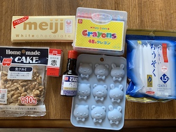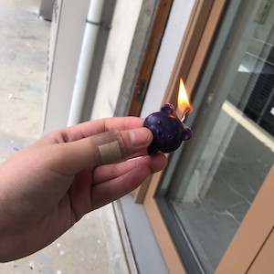
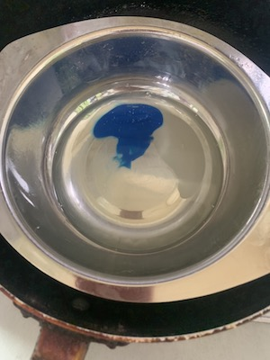
次に食品に似た形で更に食品の香りがするキャンドルを作れば面白いのではないかと思った。
まず、アイスが作れるケースを買ってきてそこにクレヨンで色をつけた溶かした蝋を流し入れて固め、
匂いは甘い匂いをつけるためにバニラエッセンスを加えた固めると下の方にバニラエッセンスが固まっていて
プツプツとできていた更に袋に入れて暫く時間が経つと溶けて液体が出てきたのであまりうまくいかなかった。
火をつけてみると最初は、持ち手がありうまくできたが溶けてくると、プラスチックの棒の部分が燃えてきてうまくいかなかった。
次は、持ち手の部分をギリギリまで短くして作ろうと思った。
他にも問題点があってその食品の匂いはどうつけるのか今の段階では分からず調べている途中(これは作れればいいなと思っています)
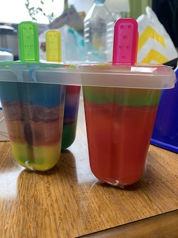
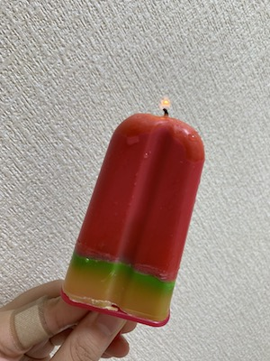
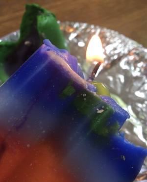
よりアイスに近づけるために木のアイスの棒を買ってきて、半分に折り溶かした蝋にくっつけて冷やしました。
完成すると今まで作った中で一番アイスに近づいた物が作れました。
見た目を綺麗に見せるために半分くらい蝋を流し込みある程度冷めたら違う色をつけた蝋を流し込んで層を作りました。冷め切らないと色が混ざり合って汚くなるものもありました。
次にキャンドル立てはアイスを持っている手にしたくてThingiverseからデータを借りて３Dプリンタで作りました。
乗せてみると本当にアイスを持っているようでうまくできたと思いました。溶けたキャンドルも本当にアイスが溶けているように見えてよかったです。
でも下に蝋が垂れてきて持ち手下にも受け皿がいるなと思いました。
なのでコースターを持ち手とくっつけ蝋が垂れてもその受け皿に垂れる仕組みにしました。
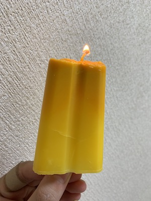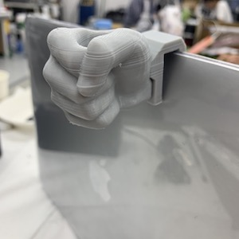
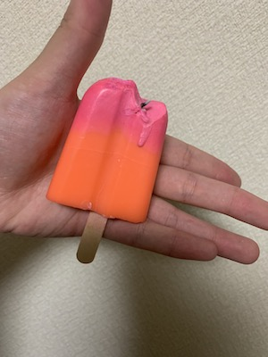
アイスのパッケージはコンビニにあるようなスライドして開ける感じにしたくて中が透けて見えるように透明なものにしました。
箱の色も最初は白色に塗りましたが夏っぽくしたいと思って青色に塗り直しました。キャンドル立ても人の手の色に合わせて肌色を塗ったつもりでしたが思ったより白くなってしまいました。
外見も箱に何もないのはオリジナリティーがないと思ったので３Dプリンタで文字を作って「アイスキャンディ」を立体文字にし箱にくっつけました。
アイスを入れる袋も本物っぽくしたかったので透明な袋にアイスを入れハンディーシーラーでくっつけてより本物に近付けました。
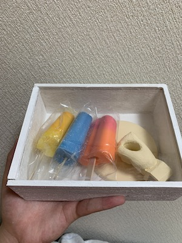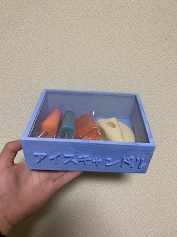
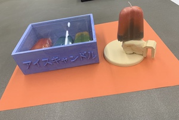
できる限り内容の書き直しはしないでください。
最後の振り返りに使いたいので。
また、途中でアイデアが変わったり、自身の判断で開発を終了する場合もあると思います。
その場合はその旨を記録するようにしてください。